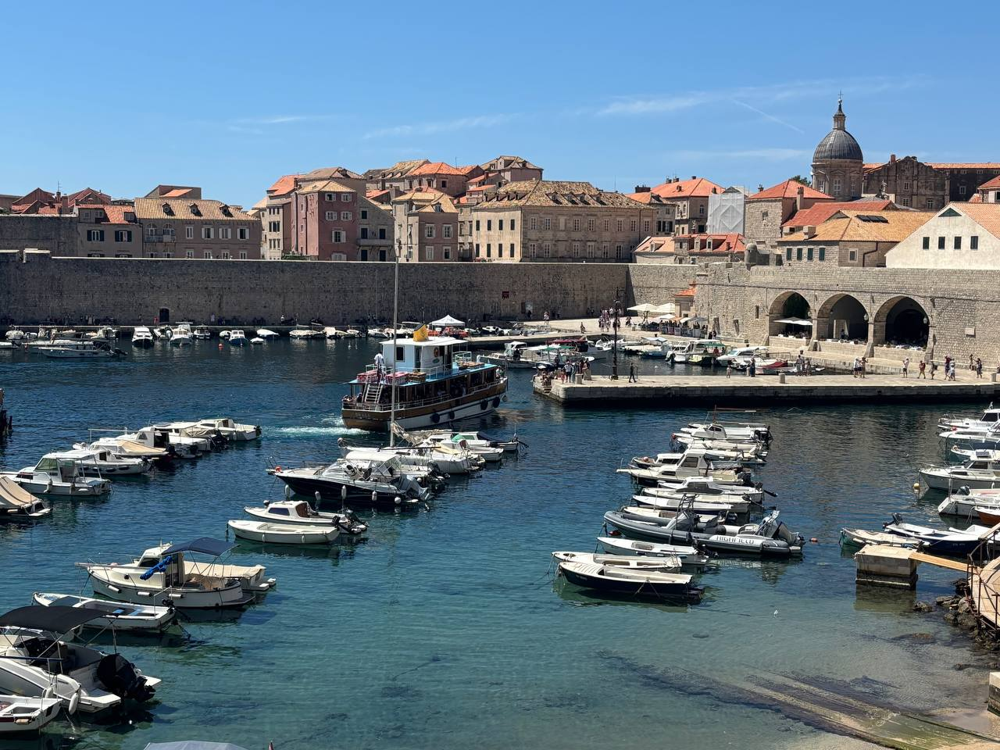

Дата народження: 19 вересня 2005 року. Місто народження: Київ.
Освіта: Ліцей №98, м.Київ;НТУУ "КПІ", м.Київ
Хоббі:
Улюблені фільми:
Дубровник – це одне з найкрасивіших міст Хорватії, розташоване на узбережжі Адріатичного моря. Його часто називають “Перлиною Адріатики” завдяки унікальній архітектурі, мальовничим пейзажам та багатій історії. Місто славиться добре збереженим Старим містом, яке оточене потужними середньовічними стінами. Прогулюючись вузькими вуличками, можна побачити старовинні палаци, церкви, площі та величні ворота, які колись захищали мешканців від нападів.
